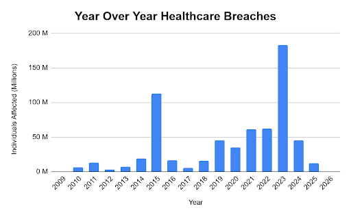
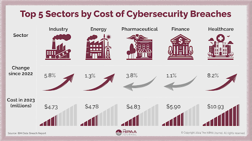
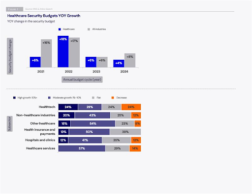

Background and a Reflection on the Past 20 Years
Cybersecurity is an important consideration for every business. Specifically in the healthcare industry, healthcare providers and hospitals handle personal health information (PHI) that make them a target for cyber criminals. Between 2018-2023, the Office for Civil Rights reported a 239% increase in hacking-related data breaches (Adler, 2026). During these breaches, patient data is sold off to the black market, healthcare institutions are heavily fined for violating HIPAA (The Health Insurance Portability and Accountability Act), and financial losses burden these healthcare institutions.
There has been a trend in the number of healthcare breaches from the past 27 years. Cybersecurity compliance and regulations are typically reactive in nature. Healthcare institutions follow these regulations, but only as much as they have to. What this means is that policies and technologies are left unupdated for years, until problems arise that force them to react.

What this graph shows us is that there are relatively low breaches for a few years, leaving companies lax and comfortable, until their technology becomes outdated to the point where systems are mass-exploited resulting in massive losses.
Who Ultimately Calls the Shots?
In the healthcare industry, Chief Information Security Officers (CISOs) are the C-suite level executives who handle all things cybersecurity. CISOs decide what regulations to focus on, how many resources are necessary for each aspect of cybersecurity, and the overall operational plan for a healthcare institution’s cybersecurity stance.
So What's the Problem?
Cybersecurity is a term that encompasses the offense, defense, compliance, risk management, and architecture of technological systems. IANS Research surveys around 750 Chief Information Security Officers (CISOs) across various industries in the U.S and Canada each year. In the year 6 edition, their research found that not only do “healthcare industry CISOs earn between 10% and 40% less… than their peers in other sectors”, but CISOs also often burn out when their organizations add more responsibilities to their scope rather than making a strategic change (IANS Research, 2025). Since CISOs are typically the only C-suite level executive responsible for cybersecurity, they are the ones responsible for all the different aspects of cybersecurity listed above.
The poor conditions CISOs face result in a high turnover rate. According to James Rundle and Catherine Stupp who each have over 7 years of reporting on cybersecurity, the average tenure for a CISO is less than 3 years. Additionally, Jill Knesek, chief security officer of a marketing software company stated in an interview that it typically takes a CISO 6 months to assess existing security policy and make changes alongside another 3-5 years to roll out a full program (Rundle & Stupp, 2020). Before a CISO has the time to focus the company’s cybersecurity goals and implement them, a new CISO has taken their place and the cycle continues. Because CISO turnover results in disorganized policy, hospitals stop at only adhering to regulations. These regulations focus on data privacy more than data security leaving systems vulnerable to attack (Jalali & Kaiser, 2018). This results in a lack of focus and direction for a company’s cybersecurity policy.
The budget growth for cybersecurity in the healthcare industry reflects this disorganization. From 2023-2024, budgets for IT security went down from 6% to 4% (IANS Research, 2025). With the lack of direction from high CISO turnover and insufficient funding, policy and cybersecurity goals become volatile and unstable. The implications of this trickle down to healthcare systems.
Why Healthcare Systems Are Especially Vulnerable
New vulnerabilities in technology are discovered every day. With unstable goals and old policy, systems are left unupdated so long that the healthcare industry cannot properly secure them. A peer-reviewed journal conducted qualitative interviews with healthcare cybersecurity experts and used simulation analysis to correlate variables to cyber attacks. This journal found that the complexity of hospital systems was the variable that increased the risk of cyber attacks most in hospitals (Jalali & Kaiser, 2018).
To quantify this, a balanced panel of 4,936 US community hospitals from 2010-2017 under a difference-in-differences model researched the effect of one hospital information exchange system on breach probability. The peer-reviewed journal concluded that hospitals that used Health Information Exchange (HIE) systems linked to a significant 0.672%-point rise in IT-related data breach after 3 years (Choi, Chen, Tan, 2023). A single system among many having a non-insignificant negative impact on data breaches speaks volumes to the general insecurity of hospital systems.
So what does this have to do with CISOs?
Connecting back to Rundle & Stupp, when CISO turnover causes an inability to form a cohesive company-wide security plans, systems are not updated and the old technology grows vulnerable. This results in complex outdated technologies that increase breach risks for the healthcare industry. The longer these technologies are left alone, the more problems there are and the harder the fix becomes. The effects of this problem are widespread.
Problem #1: Financial Losses for Healthcare Institutions
Cybersecurity breach costs and consequences are far greater for the healthcare industry in comparison to other industries.

Directly from this picture, healthcare data breaches cost the sector almost double that of the next most expensive industry, finance. Which is interesting, but understandable once the effects of losing Personal Health Information (PHI) are explained clearly.
Stephanie Domas, a lead security engineer at Battelle spells things out for the average person:
So how much does losing PHI really cost healthcare agencies?
According to the Center for Internet Security, personal health information costs healthcare agencies about $355 per stolen record (CIS, 2025). With the sheer amount of records lost, the total incurred cost is bound to be in the hundreds of millions.
Among the 6,781 healthcare breaches reported since 2009, one such instance where Anthem Inc. had 78.8 million data records compromised resulted in a loss of $16 million dollars (Adler, 2026). Depending on the severity of the data breach as well as the level of negligence leading up to the breach, HIPAA imposes fines accordingly. With the healthcare industry vulnerable, institutions are subject to these fines which can severely impact their budgets and financial situations. There are countless other examples of healthcare institutions losing millions of dollars. The consensus is clear. Healthcare data breaches cost more than neighboring sectors and they are losing tens of millions of dollars annually.
The connection is clear: a high CISO turnover rate leads to insufficient policies and planning necessary to secure these outdated and complicated healthcare systems. Breaches and hacking incidents then run rampant, resulting in laws like HIPPA to enact heavy fines against the healthcare industry.
Problem #2: Patient Data Loss
As mentioned above, it is clear that losing the PHI of patients is incredibly costly and the effects are detrimental. From 2009-2024, across 6,759 breaches, 846,962,111 individuals had their data breached (Adler, 2026). To clearly spell out the psychosocial effects of losing the PHI of patients, a peer-reviewed meta-analysis of 73 academic journals concludes that after breach, the nature of the data stolen makes it impossible to restore privacy or reverse psychosocial damage (Argaw et al., 2020).
Thinking back to the TED talk, losing a patient’s PHI is a huge concern for the patient and will often create a semi-permanent risk of identity theft. Similar to the financial costs of cybersecurity breaches, the ultimate problem lies in the high CISO turnover rate once again.
Problem #3: Patient Care Quality Reduction
Following financial losses, it makes sense to make the connection that losing money means hospitals have less resources. To really make it clear, a 2014 cross-sectional study which gathered data from cost reports and linear regression models found a positive correlation between a hospitals’ finances and quality of patient care. Across the 108 New York State care facilities studied, the journal found that there was a positive correlation between hospital financial performance and hospital quality/safety performance score (Akinleye et al., 2019). Meaning that the more money that is lost from fines and lawsuits, the worse the patient-care quality will get.
There are also certain types of healthcare breaches that can directly impact an organization. There is one such type of breach called ransomwares. This breach occurs when a data’s information is held hostage by some ransom. Without paying a heavy price, a hospital can completely lose all access to patient data or hospital systems. As a result, hospitals may come to a standstill until they figure out how to deal with the situation.
One such situation happened in 2017. A UK hospital was hacked and held for ransom, during which doctors were forced to delay treatments and reroute ambulances (Argaw el al., 2020). Another more recent incident from just last month, the entire Mississippi health system had to close 35 clinics statewide due to a ransomware attack (Wise, 2026).
Beyond patient finances and identity, vulnerable systems can directly halt the operation of hospitals themselves. When healthcare institutions leave themselves vulnerable to attack, patients end up being put at risk as well, reducing the overall quality of healthcare provided.
How Do We Reduce CISO Turnover Rate?
Considering that CISOs are the centerpoint for all things cybersecurity alongside the poor working conditions they currently face, reducing core stressors on CISOs is one way to potentially solve the security problem in healthcare.
A qualitative examination of 37 CISOs across various industries found that there are 6 core stressor factors that lead to burnout. These insights offer a starting point for reducing CISO turnover (Mulgund et al., 2025). Recalling the IANS Research from above, one of these stressers, job responsibilities, exacerbate burnout rates when the scope of CISO responsibility is expanded without careful consideration.
A way to combat this is to split the workload among different variations of the CISO role. Specifically, to list one example, BISOs (Business Information Security Officers) handle the operational decision making processes for the business aspects of the company (IANS Research, 2022). This is a form of directed funding that intentionally splits the CISO role into other variations of itself to properly distribute responsibilities and workload. IANS Research lists 5 different variations that each distinctively split up CISO responsibilities into distinct roles.
Restoring budgets from the current all-time lows to previous highs can help finance these additional roles. In the graph below, healthcare security budgets in the healthcare industry used to be at almost 18% of total budget in 2022. In 2024, it dropped down all the way to 4% (IANS Research, 2022).

With improvements to leadership, a more organized internal approach to cybersecurity can lead to positive outcomes. In 2014, a study from the MIS Quarterly peer-reviewed journal, used a Cox proportional hazard model to view the effects of proactive security investments on the healthcare sector. The journal concluded that proactive investments lead to lower security failure rates. Not only this, but it found that proactive investments were more cost-effective than reactive investments in the healthcare industry (Kwon & Johnson, 2014). With better leadership, taking a preventative approach to security proves to be not only better, but also more cost-effective than the current defensive approach that the healthcare industry uses.
By intentionally investing in meaningful roles that split CISO responsibilities, one of the key stressors, overburdening, can be solved. As a result, turnover should decrease. The reason this matters is because this breaks the cycle of hiring a new CISO before the previous had enough time to implement a full program. This will enable healthcare institutions to push progressive and proactive policies to update their outdated systems more efficiently. By updating systems, breach frequency will drop resulting in decreased financial loss from fines, psychosocial patient harm from PHI loss and improved patient care quality.
References
- Adler, S. (2026). Healthcare data breach statistics. HIPAA Journal. https://www.hipaajournal.com/healthcare-data-breach-statistics/
- Akinleye, D. D., de la Torre Díez, I., & Parra-Calderón, C. L. (2019). Data breaches in healthcare: Causes, consequences and prevention strategies. PLOS ONE, 14(9), e0219124. https://journals.plos.org/plosone/article?id=10.1371/journal.pone.0219124
- Argaw, S. T., Troncoso-Pastoriza, J. R., Lacey, D., Florin, M.-V., Calcavecchia, F., Anderson, D., Burleson, W., Vogel, J.-M., O’Leary, C., Eshaya-Chauvin, B., & Flahault, A. (2020). Cybersecurity of hospitals: Discussing the challenges and working towards mitigating the risks. BMC Medical Informatics and Decision Making, 20, Article 146. https://link.springer.com/article/10.1186/s12911-020-01161-7
- Center for Internet Security. (2025). Data breaches in the healthcare sector. https://www.cisecurity.org/insights/blog/data-breaches-in-the-healthcare-sector
- Choi, T. M., Chen, Y., & Tan, K. H. (2023). Assessing the impact of health information exchange on hospital data breach risk. International Journal of Information Management Data Insights, 3(2), Article 100167. https://www.sciencedirect.com/science/article/pii/S1386505623001673
- IANS Research. (2025, March 27). Healthcare security spend and budgets decline: Access key report data and trends. https://www.iansresearch.com/resources/all-blogs/post/security-blog/2025/03/27/healthcare-security-comp-and-budgets-decline--access-key-report-data-and-trends
- IANS Research. (2022, September 6). Understand variations of the CISO role. https://www.iansresearch.com/resources/all-blogs/post/security-blog/2022/09/07/understand-variations-of-the-ciso-role
- Jalali, M. S., & Kaiser, J. P. (2018). Cybersecurity in hospitals: A systematic, organizational perspective. Journal of Medical Internet Research, 20(5), e10059. https://www.jmir.org/2018/5/e10059/
- Kwon, J., & Johnson, M. E. (2014). Proactive versus reactive security investments in the healthcare sector. MIS Quarterly, 38(2), 451–471. https://misq.umn.edu/misq/article-abstract/38/2/451/581/Proactive-Versus-Reactive-Security-Investments-in
- Mulgund, E., et al. (2025). A qualitative examination of stressors contributing to burnout among chief information security officers (CISOs). ResearchGate. https://www.researchgate.net/publication/398679787_A_Qualitative_Examination_of_Stressors_Contributing_to_Burnout_Among_Chief_Information_Security_Officers_CISOs
- Rundle, J., & Stupp, C. (2020). CISOs’ short tenures can hamper cyber defenses. The Wall Street Journal. https://www.wsj.com/articles/cisos-short-tenures-can-hamper-cyber-defenses-11582021801